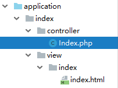
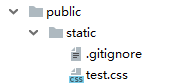
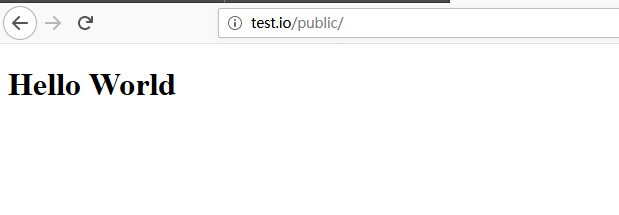
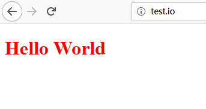
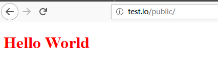
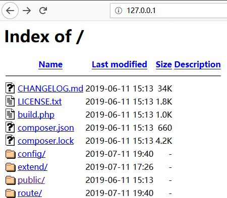

静态资源文件一般是放在public目录里，不只是css，只要是静态资源文件都没有显示出来。
（更好的阅读体验可访问 这里 ）


三个文件分别为：Index.php、test.html、test.css
//Index.php
<?php
namespace app\index\controller;
use think\Controller;
class Index extends Controller
{
public function index()
{
return $this->fetch();
}
}<!--index.html-->
<!DOCTYPE html>
<html lang="en">
<head>
<meta charset="UTF-8">
<title>This is the test</title>
<link rel="stylesheet" href="/static/test.css">
</head>
<body>
<h1>Hello World</h1>
</body>
</html>/*test.css*/
h1 {
color: red;
}为了方便问题陈述，使用了虚拟主机。集成环境为xampp，不使用也可，本质上都是一样的。不能配置虚拟主机可参考最后的方法
apache\conf\extra\httpd-vhosts.conf 文件，配置以下内容C:\Windows\System32\drivers\etc\hosts 文件，在末尾添加也就才开始显示出本文的重点：我们之前引入的 test.css 没有生效

我们在引入 css 文件的时候，使用的是<link rel="stylesheet" href="/static/test.css">
可见，我们默认是把 public目录 作为根目录来使用的（ /static 在 public 目录下）
而我们在配置虚拟主机的时候，使用的是DocumentRoot "C:/xampp/htdocs/www/test/" 是把 test 项目文件作为根目录使用。代码使用的根目录与项目实际根目录不在同一位置。所以，引入的文件不能正确的显示出来。
修改虚拟主机对应的目录为DocumentRoot "C:/xampp/htdocs/www/test/public/，把根目录直接映射到public目录，重启服务器。这样就可以在 html 文件里直接使用 /static 来引入静态资源文件。
最终的效果：

修改html 引入外部文件的代码为：<link rel="stylesheet" href="/public/static/test.css">，这样也能使用引入的文件，不过自然是麻烦一些。
最终的效果：

如果没有配置虚拟主机，在浏览器直接输入的 127.0.0.1，可根据显示出的内容，自行判断所处的位置，然后调整代码或修改配置文件。
例如：如果出现的是这种

发现直接定位的是项目主文件。那么就需要在代码中这样使用：<link rel="stylesheet" href="/public/static/test.css">。然后点击 public/ 即可正确显示。反之，如果直接显示出了页面，就不用再加 /public 了。